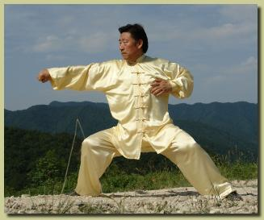

|
|||||||||||||||||||||||||||||||||||||

Grandmaster Chen Xiaowang was born in 1945 in Chenjiagou (Chen Village), Henan Province, China. He is a senior national martial artist and professor in the Chinese Martial Arts International Promotions Centre. Upon a solid foundation of experience of his ancestors, Chen has not only been successful in Taijiquan himself, but has tirelessly promoted his “family martial art” throughout the world. He is direct descendent of the creator of Taijiquan, Chen Wangting and the grandson of Chen Fa’ke, renowned as the greatest Taijiquan master at the beginning of the 20th Century. At a very young age, Chen received rigorous training in Chen family Taijiquan theory, forms, weapons, push hands, and free sparring from his father, Chen Zhaoxu, and his uncles, Chen Zhaopi and Chen Zhaokui. In 1980, he became a board member of the Henan Institute of Sport and began teaching Taijiquan professionally. He entered the National Taijiquan Competition winning gold medals for three consecutive years (1980, 1981, and 1982). In 1985, he represented China in the First International Martial Arts Invitational Competition in Xi’an receiving the world champion title for Taijiquan. Chen continued to compete in sizable competitions and was awarded the title of champion in Taijiquan more than twenty times. He has represented China sharing martial arts knowledge with people in more than 30 countries, including Japan, America, and Singapore. His deep Taijiquan skill has allowed him defeat all martial artists who have challenged him. Over many years, Chen has taught tens of thousands of outstanding Taijiquan students both in and outside of China. In 1988, Chen was awarded the Contribution to Martial Arts prize by the National Institute of Martial Arts. Chen Xiaowang has held many positions of leadership in areas of martial arts, calligraphy, culture, and Chinese medicine and currently holds various positions in many international and Chinese Taijiquan institutions. He was the principal in the films on Chen family Taijiquan produced by Chinese Central Television (CCTV) and has choreographed and directed martial arts films. Additionally, he authored a number of renowned books and essays on Taijiquan. His books and videos have been translated into many languages and have been published worldwide. Chen has contributed significantly to the international promotion of Taijiquan. In 1990, he left China on a mission to promote Taijiquan to the world. He established the World Chen Xiaowang Taijiquan Association and has since been touring Europe, North America, South America, and Asia promoting and teaching Taijiquan. The distance he travels each year is equivalent to twice the circumference of the earth. In February 2003, he accepted an invitation to return to his hometown, Jiao Zuo, to author a Taijiquan book for elementary and high school students. Both the people and government of Jiao Zuo warmly welcomed him. Chen’s big heartedness, his outstanding Taijiquan skills, and his personal characteristics make him highly respected around the world. He is truly the most outstanding Chen family Taijiquan master of his generation and a world-renowned martial artist. |
||
© 2010-16 CXW